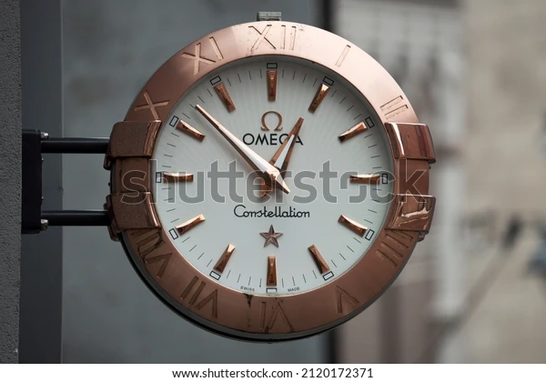

スピードマスターは1957年にカーレース用の腕時計として販売が開始されて以来、長きにわたり愛されている、オメガの代表的なロングセラーモデルです。文字盤の中に2,3個の小さなダイヤルをもつクロノグラフ(ストップウォッチ)機構が搭載されているのがスピードマスターの特徴です。スピードマスターの中で1番魅力的なものは「SPEEDMASTER'57 コーアクシャルマスタークロノメータークロノグラフ40.5MM」です。（下画像は参考）圧巻のデザインと、ワインレッドを基調とした文字盤は、付けているだけでイケてる大人を味わえると思います。値段は100万円と高額ですが超高級時計の中では比較的抑えめな値段であることには驚きです。

前のページ 次のページ